日本の風景12か所を、AIで生成した写真→微かに動く5秒動画、の12カットに仕立てた。海外の視聴者（満員電車で疲れた人・家族と離れて働く人・その家族・アニメ等で日本に興味を持った人）向けに、英語で1本のナレーションを作成。各カットに最低1つ、裏付けのある事実（噴火した年・再建された年・現存する年代・鳥居が奉納された仕組み等）を入れ、「日本すごい」の一方通行ではなく、最後の一文で相互リスペクト（「あなたの国の景色も見てみたい」）を添えた。
01 富士山
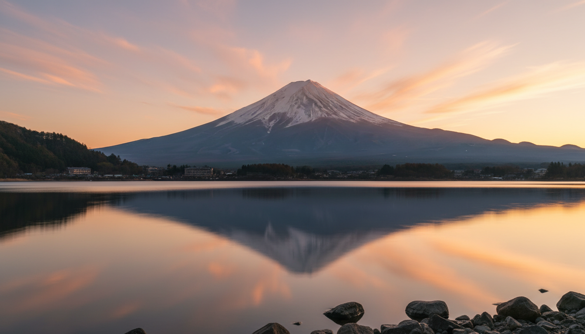
"Mount Fuji last erupted in 1707. For three centuries now, it has simply watched."
事実：富士山の直近の噴火は1707年（宝永大噴火）。以来300年以上噴火していない。
02 伏見稲荷
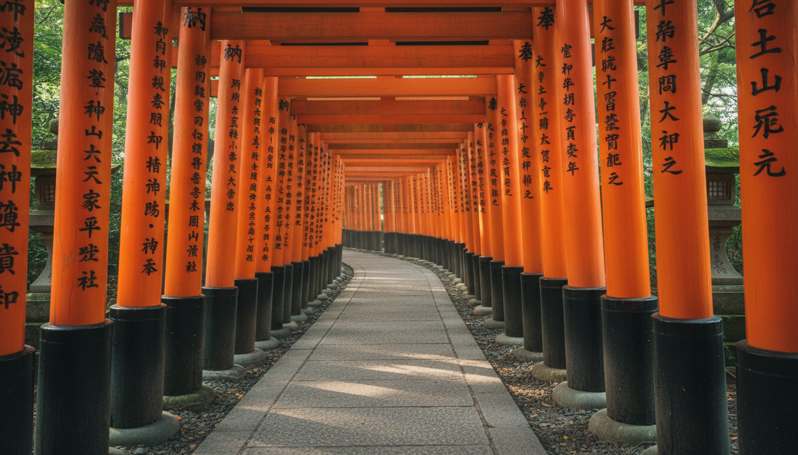
"Each gate here was given by someone, one at a time, for centuries."
事実：伏見稲荷大社の鳥居は、個人や企業が願掛けとして奉納したものが積み重なってできている。
03 渋谷スクランブル交差点
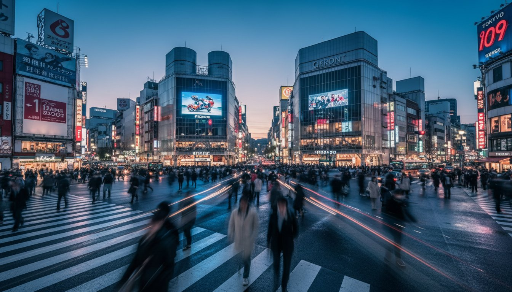
"Up to three thousand people cross this street at once, and almost no one collides."
事実：渋谷スクランブル交差点は多い時で一度に約3000人が渡ると言われる、世界的に知られた交差点。
04 嵐山の竹林
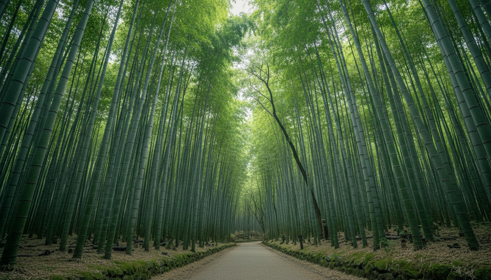
"This bamboo grove has been tended by local farmers, by hand, for generations."
事実：嵐山の竹林は地元の竹農家が世代をまたいで手入れを続けている。
05 金閣寺
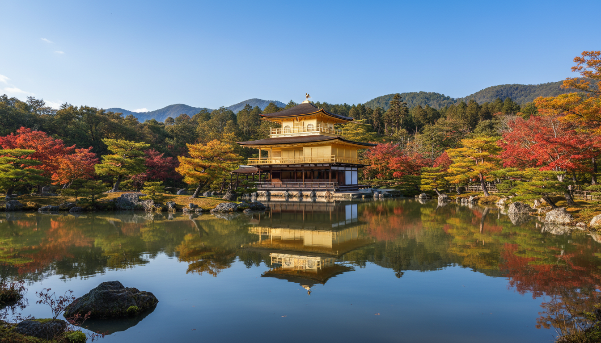
"This pavilion burned down in 1950. Five years later, it rose again in gold."
事実：金閣寺は1950年に放火で焼失し、1955年に再建された。
06 宮島・厳島神社
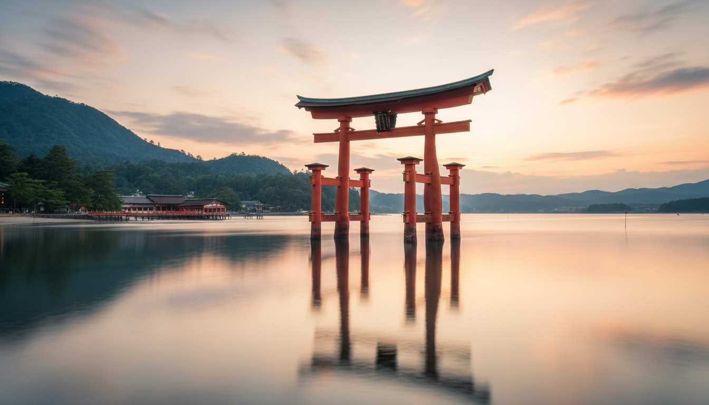
"At high tide, this gate seems to float. It has stood here since the eleven hundreds."
事実：厳島神社の現在の社殿の形は1168年（平安時代末期）に整えられたとされる。
07 地獄谷野猿公苑
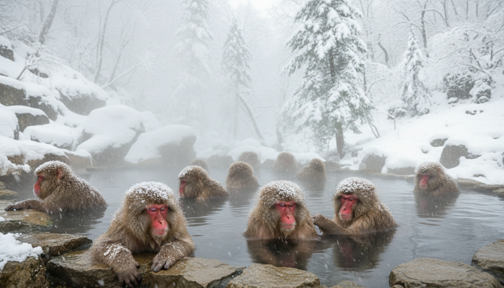
"These monkeys began soaking here in the 1960s, and the photos reached the whole world."
事実：地獄谷のサルが温泉に入る姿は1960年代から見られるようになり、写真が世界に紹介され有名になった。
08 白川郷
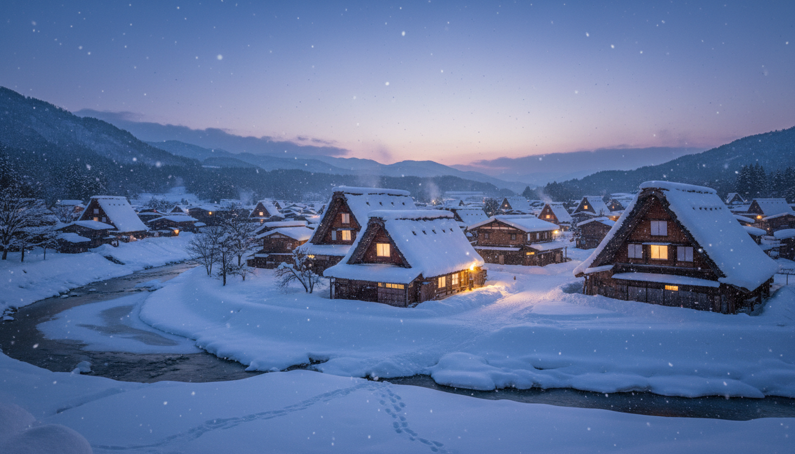
"These roofs were shaped to shed heavy snow. Some have stood for over a century."
事実：白川郷の合掌造りの急勾配の屋根は豪雪に耐えるための形で、築100年を超える建物もある。
09 奈良公園の鹿
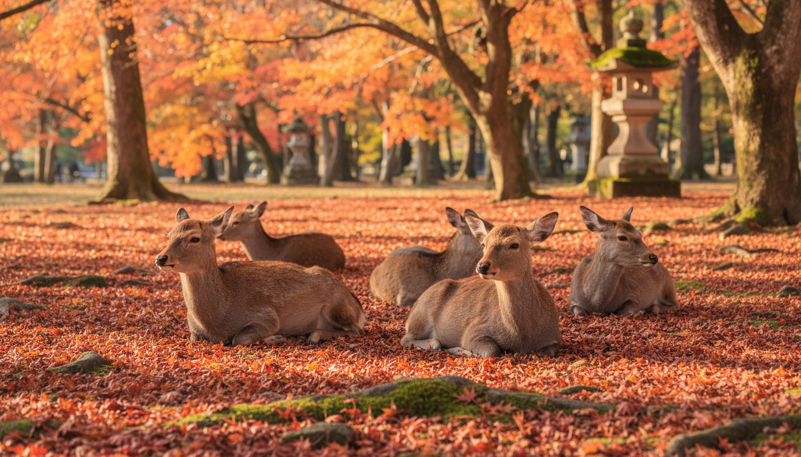
"Over a thousand wild deer roam free here, long seen as messengers of the gods."
事実：奈良公園には1000頭を超える野生の鹿がおり、古くから神の使いとされ保護されてきた。
10 東京タワー
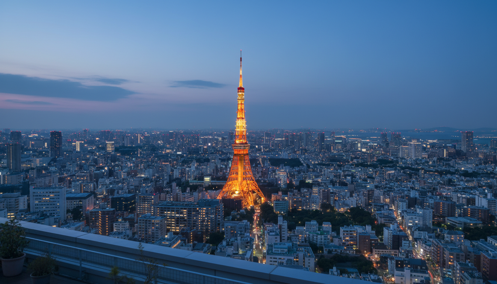
"Built in 1958, it stands a little taller than the tower in Paris that first inspired it."
事実：東京タワーは1958年完成。パリのエッフェル塔に着想を得ており、高さはエッフェル塔よりわずかに高い。
11 富良野のラベンダー畑
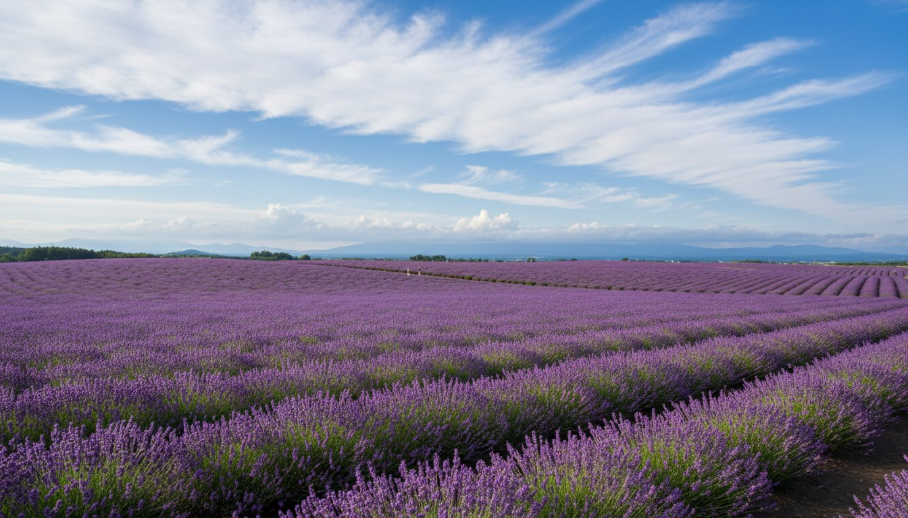
"Farmers once grew lavender here for its oil. Now the fields themselves are why people come."
事実：富良野のラベンダーはもともと香料油の採取用に栽培され、今は畑の景観自体が観光の目的になっている。
12 沖縄の海（締め）
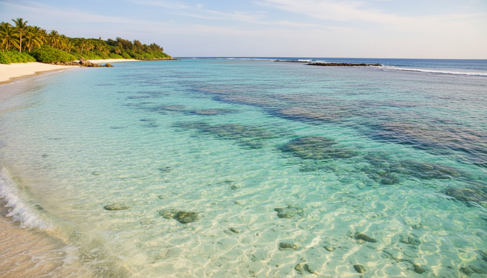
"Every country holds views like these, quietly waiting to be noticed. This one happens to be ours. We would love to see yours, too."
締めの一言：一方通行の「日本すごい」ではなく、相手の国の景色も見たいという相互リスペクトのメッセージ。
Mount Fuji last erupted in 1707. For three centuries now, it has simply watched.
Each gate here was given by someone, one at a time, for centuries.
Up to three thousand people cross this street at once, and almost no one collides.
This bamboo grove has been tended by local farmers, by hand, for generations.
This pavilion burned down in 1950. Five years later, it rose again in gold.
At high tide, this gate seems to float. It has stood here since the eleven hundreds.
These monkeys began soaking here in the 1960s, and the photos reached the whole world.
These roofs were shaped to shed heavy snow. Some have stood for over a century.
Over a thousand wild deer roam free here, long seen as messengers of the gods.
Built in 1958, it stands a little taller than the tower in Paris that first inspired it.
Farmers once grew lavender here for its oil. Now the fields themselves are why people come.
Every country holds views like these, quietly waiting to be noticed. This one happens to be ours. We would love to see yours, too.